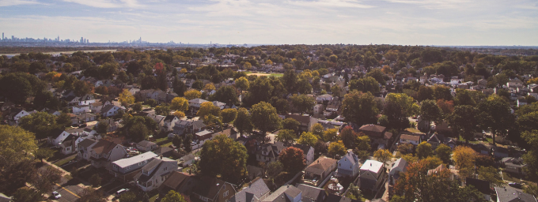
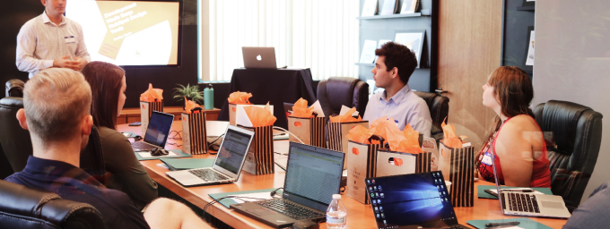
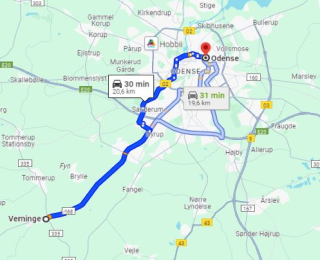
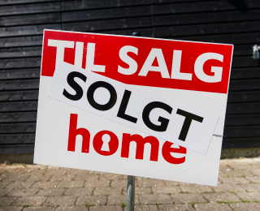
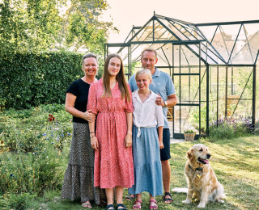

Velkommen til Verninge og omegn
I Verninge skaber fællesskabet gode forudsætninger for børnenes trivsel
Et stærkt lokalsamfund som i Verninge er afgørende for børns trivsel og udvikling, styrket gennem positiv social interaktion. Nære bånd med naboer og lokalsamfund skaber en tryg atmosfære, afgørende for børns mentale velbefindende.
Dette gode fællesskab fremmer vigtige sociale færdigheder som empati og samarbejde. Verninge's lokalsamfund er også en kilde til læring om kulturelle værdier og traditioner, hvilket udvikler respekt for forskellige perspektiver. Samlet set udgør Verninge's fællesskab en berigende ramme, hvor børn kan vokse, lære og opleve glæden ved at være en del af noget større end dem selv.
Læs mere om Verninge og OmegnGå på opdagelse i Verninge og omegn

Verninge og omegn
Kalender
Om borgerforeningen
Kontakt
5 gode grunde til at flytte til Verninge
1. Smuk natur med kort afstand til Odense
Verninge ligger i bekvem nærhed til Odense, hvilket gør det nemt at nyde byens faciliteter, kulturtilbud og indkøbsmuligheder på blot en kort køretur.
2. Overkommelige boligpriser
Verninge tilbyder overkommelige boligpriser og ledige byggegrunde, hvilket gør det lettere for familier at finde et hjem, der passer til deres behov og budget.
3. Nærliggende skolemuligheder og gode dagtilbud
Verninge har adgang til lokale skoler, herunder Verninge skole, der giver børnene en nærliggende og kvalitetsorienteret uddannelsesmulighed. Yderligere uddannelsesmuligheder som Vestfyns Gymnasium styrker områdets uddannelsesprofil.
4. Trygt fællesskab og aktivt foreningsliv.
I Verninge oplever du et varmt og trygt fællesskab, hvor naboer og lokale kender hinanden. Det sociale bånd styrker trivslen og skaber en følelse af samhørighed og gensidig støtte
5. God offentlig transport
Med gode busforbindelser til Assens, Odense og omkringliggende byer er Verninge godt forbundet, hvilket gør det nemt at komme rundt i regionen